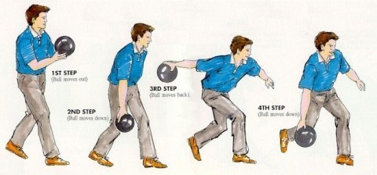

팔이 일직선을 유지해야한다.
팔이 구부러지지 않아야 하며 항상 어깨와 팔이 90도로 유지해야한다.
허리를 약간 숙여야 무거운 공을 들었을때 적절한 균형이 잡힌다.
무릎도 약간 굽혀야한다. 무릎을 일직선으로 피고 있다면
허리를 숙인 각도와 밸런스가 맞지 않는다.
시선은 에임 스팟을 봐야한다.
시선은 레인 끝의 핀이나 볼을 보지않고
목표로 설정한 에임 스팟쪽으로 던지는게
가장 좋은 습관이다.